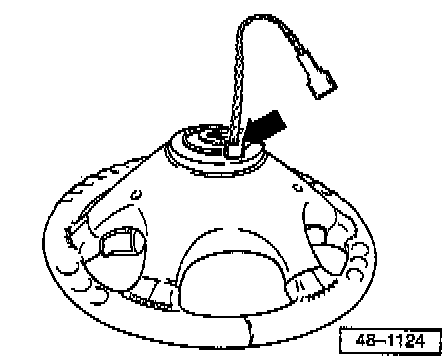

Steering Wheel With Airbag, Removing & Installing
Steering wheel with airbag, removing and installingRemoving
- Remove airbag unit, refer to Airbag Unit, Removing & Installing Airbag Unit, Removing & Installing
- Remove trim below steering column switches.

- Disconnect wiring harness connector (arrow).
- Remove foam rubber sleeve from connector, if fitted.
- Remove hex nut and pull steering wheel off steering column.

NOTE: After removing steering wheel, slightly turn connecting ring so the wire -arrow- faces downward. (Hold steering wheel in installation position.)
The Airbag Spiral Spring -F138- then locates and is prevented from turning.
If this is not done, or if the connecting coil is allowed to turn, it could cause the connecting coil to be overstressed and thereby damaged when the steering column is at full lock.
Installation
- Place steering wheel in position on splines, install nut and tighten.
Tightening torque: 50 Nm (37 ft lb)
- Connect connector for airbag unit below steering wheel.
- Install trim below steering column.
Make sure that the airbag spiral spring connector sits in recess in trim.
- Connect connector in steering wheel to airbag unit.
- Install airbag unit, refer to Airbag Unit, Removing & Installing Airbag Unit, Removing & Installing
NOTE: Always use new socket head bolts for airbag unit.
- After installing the airbag steering wheel first switch ignition ON, then connect battery Ground (GND) strap.
WARNING: Ensure that no one is in the vehicle when reconnecting the battery Ground (GND) strap.